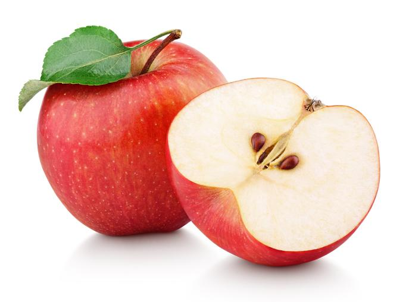

Las frutas son saludables
Se denomina fruta a aquellos frutos comestibles obtenidos de plantas cultivadas o silvestres que, por su sabor generalmente dulce-acidulado, su aroma intenso y agradable y sus propiedades nutritivas, suelen consumirse mayormente en su estado fresco, como jugo o como postre (y en menor medida, en otras preparaciones), una vez alcanzada la madurez organoléptica, o luego de ser sometidos a cocción.

Consumo
Las frutas pertenecen al grupo 5 de la rueda de alimentos, ricos en azúcares, vitaminas C y A y sales minerales, representada en dicha rueda de color verde. Por su alto contenido en vitaminas y sales minerales pertenece al grupo de alimentos reguladores. Las frutas se localizan en el segundo piso de la pirámide de alimentos, es decir, que se recomienda la ingesta de 4 piezas de fruta en niños y 2 piezas en el adulto al día. A pesar de que en la clasificación general por grupos, las verduras y frutas están en grupos diferentes, los nutrientes que contienen son similares, aunque en el caso de las frutas el contenido en hidratos de carbono es más elevado y ello las convierten en alimentos un poco más energéticos.